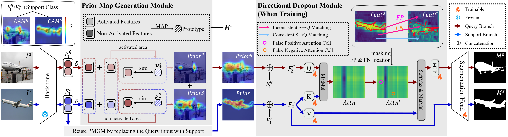
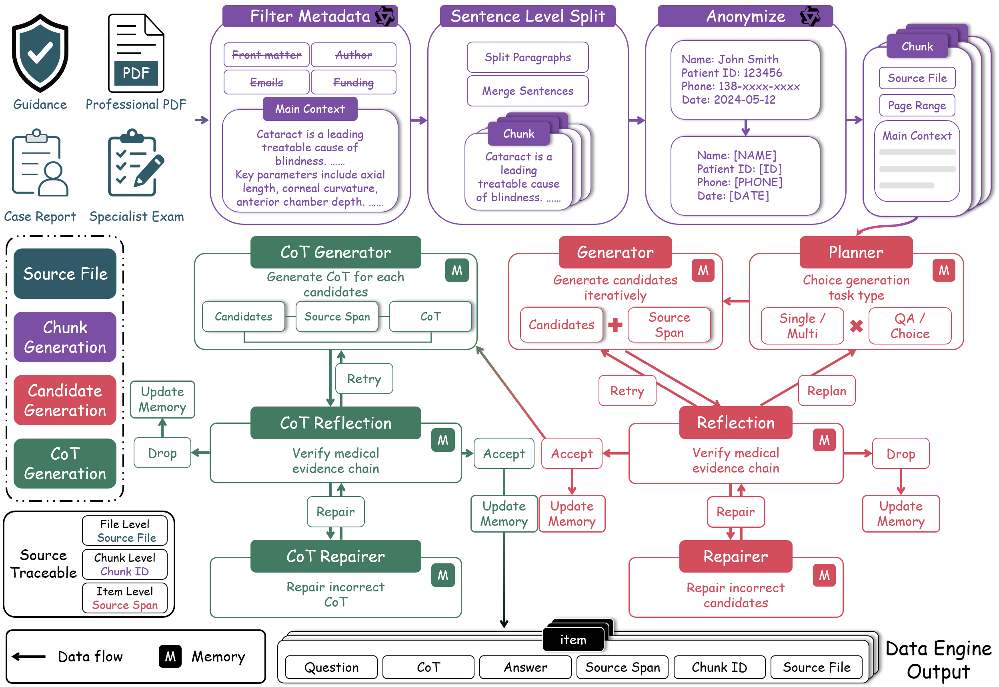

北京大学
2023.09 - 至今人工智能 · 博士在读
未来技术学院 · 预计 2028 年 6 月毕业
人工智能方向博士生
北京大学 · 未来技术学院
研究方向：
多模态大模型
多模态 Agent
计算机视觉
医学影像分析
Beijing, China
更新于 2026 年 10 月
人工智能 · 博士在读
未来技术学院 · 预计 2028 年 6 月毕业
数据科学与大数据技术 · 学士
校级优秀毕业生 · 校级奖学金
荣誉美国大学生数学建模竞赛 Outstanding Winner（特等奖）
上下文分割：模型侧优化（IIR）与数据侧优化（RTAdapter）；眼科大模型后训练：可信指令数据构建（DeepEye-400K）。

方法图 ↗01 上下文分割 · 模型侧优化
Inter- and Intra-image Refinement for Few Shot Semantic Segmentation
2024.08 - 2025.09
上下文分割利用少量参考图像及其掩码，在新图像中分割参考所指定的对象或部件，为降低像素级标注成本、识别未见类别提供了一条路径。原型方法通常将参考前景压缩为一个类别向量，再通过相似度生成目标先验图。从同一张图内来说，单一原型容易抹平颜色、纹理等局部差异；从参考-目标图像匹配上来说，外观相似的背景又可能被错误激活，造成漏分和误检。
因此本文从编码器目标先验图质量与解码器参考-目标特征匹配两个环节优化模型。在 PASCAL-5i 的诊断实验中，先验图与最终预测相对真值的 BCE Loss 呈正相关。基于这一观察，IIR 将编码器区域原型细化与解码器错误匹配抑制结合起来。
先验图生成模块（PMGM）利用类激活图（CAM）划分核心判别区域与局部细节区域，在参考掩码约束下分别聚合两类前景原型，并保留原始前景原型。随后，将不同原型与目标图像中对应的 CAM 区域进行一致性匹配，减少单一类别向量造成的信息丢失，生成更集中、背景噪声更少的先验图。
定向掩码模块（DDM）作用于参考–目标双分支解码器：参考分支利用已知掩码细化特征，再引导目标分支预测。训练时定位交叉注意力中前背景标签不一致的像素对，仅屏蔽导致假阳性或假阴性的错误对应，保留其他有效关联。测试时不使用目标标注，也不执行这一掩码操作；训练时按掩码比例缩放保留项，以缓解训练与测试差异。
在 ResNet-50、1-shot 设置下，PASCAL-5i 的 mIoU 从 68.3% 提升至 72.9%，COCO-20i 从 46.9% 提升至 53.1%，分别提高 4.6 和 6.2 个百分点。评测覆盖标准、部件与跨域分割，并基于 FIVES、STARE 构建眼底血管跨域评测，检验方法对细小结构和复杂拓扑的适应能力。
在相同 ResNet-50 设置下，5-shot 的 PASCAL-5i 从 71.8% 提升至 75.6%，COCO-20i 从 51.9% 提升至 59.0%。LVIS-92i 的 1-shot / 5-shot 分别从 14.6% / 20.9% 提升至 21.5% / 26.3%；PASCAL-Part 的 1-shot 从 30.1% 提升至 34.2%。
模块消融：单独加入 PMGM 达到 71.3%，单独加入参考分支与 DDM 达到 71.4%，完整方法达到 72.9%。在包含 PMGM 与参考分支的配置中，逐像素对掩码相比整列掩码提高 1.1 个百分点。
先验图相对真值的平均 BCE 从 0.3508 降至 0.2809（降低 19.93%），支持区域原型细化对先验质量的改善。
 方法图 ↗
方法图 ↗
02 上下文分割 · 数据侧优化
RTAdapter: Exploring the Upper Bound of In-Context Segmentation from a Data-Centric Perspective
2026.01 - 2026.10
同一个分割模型面对同一目标图像，仅更换参考图像及其掩码，就可能产生完整预测、局部漏分或背景误检。本文由此研究：保持模型不变，能否通过改善参考信息提高预测质量？这与 IIR 的模型侧优化形成互补，重点转向当前参考–目标组合的数据侧优化。
论文将目标图像及其真值掩码用作参考以测试测量目标作为参考的经验上界。PASCAL-5i 1-shot 下，原型类方法、4D相关性类方法、SAM类方法的 FCP、PAHNet、Matcher 的 mIoU 分别从 72.7%、71.6%、67.7% 升至 80.0%、83.3%、86.5%。我们进一步分析了参考-目标特征两分布之间的距离与分割 BCE Loss 之间的关系，分布距离与先验图的 BCE Loss 呈正相关。
为了缩小参考-目标两分布之间的距离，我们将参考适配过程建模为带语义约束的最优传输问题，共同优化参考–目标的软对应关系与参考前景表示。轻量残差适配器仅更新参考前景特征，保持原始模型参数、目标特征和参考背景特征不变；适配后保留特征的空间布局及维度，可直接接入原有的原型构建、4D 相关性计算或 SAM 提示生成流程。
但单纯降低分布距离可能将前景对齐到错误区域，因此引入三类约束：原型保持限制全局类别语义漂移；参考语义重建利用传输得到的目标特征恢复已知参考掩码，检查局部匹配是否正确；目标先验图蒸馏以适配前的固定先验约束目标响应，稳定传输与特征更新。传输方案和适配器交替优化，后续预测仍由原模型完成。
在 PASCAL-5i 1-shot 上，FCP、PAHNet、Matcher、FSSAM 的 mIoU 分别提升 1.0、1.3、3.8、1.3 个百分点。Matcher 从 67.7% 提升至 71.5%，FSSAM 从 81.0% 提升至 82.3%。论文还将方法扩展到 MC-LLaVA，概念识别、空间定位和视觉选择题准确率分别提高 2.0、3.8、3.2 个百分点。
| 方法 | 原基线 | + RTAdapter | 提升（百分点） |
|---|---|---|---|
| FCP* | 72.7 | 73.7 | +1.0 |
| PAHNet | 71.6 | 72.9 | +1.3 |
| Matcher* | 67.7 | 71.5 | +3.8 |
| FSSAM | 81.0 | 82.3 | +1.3 |
* 为论文复现基线；每项适配效果均与对应基线在相同设置下比较。
语义约束消融：Matcher 基线为 67.7%；只最小化 EMD 时降至 67.0%，依次加入原型保持、参考语义重建和目标先验图蒸馏后达到 69.5%、70.9% 和 71.5%。因此，分布距离下降无法约束语义一致性。
参考质量分析：在固定的 100 个目标、每个目标 50 个参考组成的 5,000 对样本中，按 EMD 划分十组，九组获得平均提升。最不相似组提升 4.708 个百分点；最相似组略降 0.037 个百分点，说明收益随参考质量而变化。
跨域与多模态：分割实验涵盖标准、部件和跨域设置。跨域 ISIC 的 1-shot / 5-shot 提升 5.8 / 7.4 个百分点，但 DeepGlobe 分别下降 3.5 / 1.8 个百分点。MC-LLaVA 的 VQA BLEU 从 0.652 提升至 0.697，描述中的概念标识召回率从 0.593 提升至 0.654。
计算开销：Matcher 在论文测试配置下，3 次适配更新引入 0.526M 参数（原模型的 0.056%），FLOPs 增加 1.48%，推理耗时增加 3.85%（约 5.679 秒至 5.898 秒）。

方法图 ↗03 专科数据构建与大模型后训练
DeepEye-400K: Agentic Data Engine for Evidence-Grounded Ophthalmic Instruction Synthesis
2025.09 - 2026.06
大模型的专科后训练需要高质量指令数据，但我们发现数据来源可靠不等于生成样本可靠：即使材料来自教材、指南或病例，生成的问题仍可能无法由原文回答，答案和推理解释也可能缺乏证据。DeepEye-400K 将问答对生成拆成可靠来源整理与可信生成过程两部分，重点控制从原文到训练样本的证据一致性。
数据准备阶段过滤目录、作者信息等元信息并进行文本切块，保留源文件、文本块编号和证据片段，让每条样本能够回溯到原始依据。指令覆盖知识问答、选择题和病例推理，支持模型的眼科领域后训练。
数据引擎由规划、生成、反思、修复与记忆多 Agent协作完成。先规划任务并生成候选问答，再核验问题可回答性和答案证据；按错误类型分流到局部修复、重新生成、重新规划或剔除，修复后再次核验。问答通过后，独立生成并检查推理解释，排查对题干或已有对话之外信息的依赖，形成生成–核验–修复闭环。
反馈首先写入局部记忆，指导当前文本块的生成与重试，再去重归纳为跨文本块复用的全局规则。数据去重结合精确匹配、Embedding 与 BM25 双路召回、Reranker 重排及 LLM 逐对判别，识别表述不同但作答要求和关键条件相同的重复问答。
共生成约 37.5 万条完整样本，去重后保留约 32.4 万条眼科指令。在 Multi-Ophthalingua-Choice 公开评测上，后训练的 Qwen 9B、35B-A3B 模型准确率较各自基线分别提升 3.66、4.26 个百分点。
多模态工具编排与可信报告生成
本项目面向眼底筛查中的多病种识别、病灶量化与报告生成需求。分类模型、分割模型和多模态大模型的结果可能互相冲突，单次调用也难以处理异常量化结果。因此，系统将工具协作、异常核验和影像证据追溯结合起来，生成带影像证据的可追溯报告。
本人负责多模态大模型分割与诊断、Agent 动态编排及报告可视化输出与展示，融合专科视觉模型与 VLM 判定。基于 ReAct 框架，针对分类冲突、分割结果异常、解剖与几何关系异常三类情况，触发补充核验与交互分割。
工程上接入32 个工具，包括图像质控、12 类多标签分类、视杯视盘与黄斑病灶专病分割、血管量化、SAM 分割及 VLM 分类判定等。工具返回的分类分数、区域掩码和量化结果被组织为共享分析状态，供 Agent 选择下一步核验动作；补充结果回写状态，驱动逐病种核验、报告更新与可视化导出。
团队在 200 张图像、224 个疾病条目的核验中，将报告错误率从 5.36% 降至 1.79%，纠错率 75%、误改率 0.47%。视杯视盘分割 mDice 从 0.8805 提升至 0.9012，平均每目标追加修改 1.3 轮。
配合团队完成云端服务与 Kestrel 300、Kestrel 3100 及大广角设备集成，部署后日均服务约 4,000 份报告。